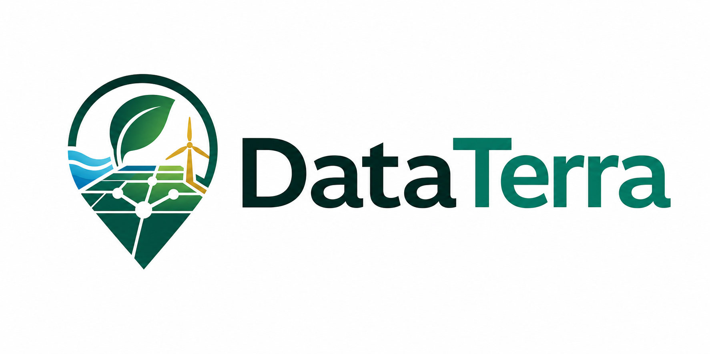

Manual da Solução DataTerra
Guia direto para a banca avaliadora entender o objetivo, o uso e a leitura dos resultados da plataforma.
1. Objetivo da solução
A DataTerra estima o impacto territorial de instalar um data center em uma região, cruzando recursos disponíveis, impacto hídrico e conectividade.
A pergunta central da plataforma é: se um data center for instalado neste local, quais recursos existem ao redor e quais alertas precisam ser considerados antes de avançar?
2. Quando será utilizada
A plataforma deve ser usada na triagem inicial de locais. Ela ajuda a escolher quais regiões merecem estudo técnico mais profundo.
- Comparar municípios ou regiões candidatas.
- Visualizar energia renovável, água, esgoto e conectividade.
- Simular o raio de consumo de um data center.
- Explicar para a banca por que um local parece melhor ou pior.
3. Como usar a plataforma
- Selecione um estado e busque um município ou região candidata.
- Clique no mapa ou use o local selecionado como ponto do data center.
- Ajuste o raio para medir recursos próximos.
- Leia o resumo, o impacto hídrico, as premissas e o ranking.
4. Como interpretar o score
O score vai de 0 a 100. Quanto maior, melhor a aptidão preliminar do local para receber um data center.
Alta aptidão
Condicionada
Alto risco
O cálculo combina energia renovável, infraestrutura elétrica, segurança hídrica, conectividade e segurança regulatória preliminar.
5. O que observar na avaliação
6. Limitações e próximos passos
A DataTerra não substitui estudo ambiental, outorga de água, licenciamento, análise elétrica real ou parecer técnico final.
Próximos passos: integrar análise por bacia hidrográfica, subestações, rotas terrestres de fibra, áreas sensíveis e regras de licenciamento.